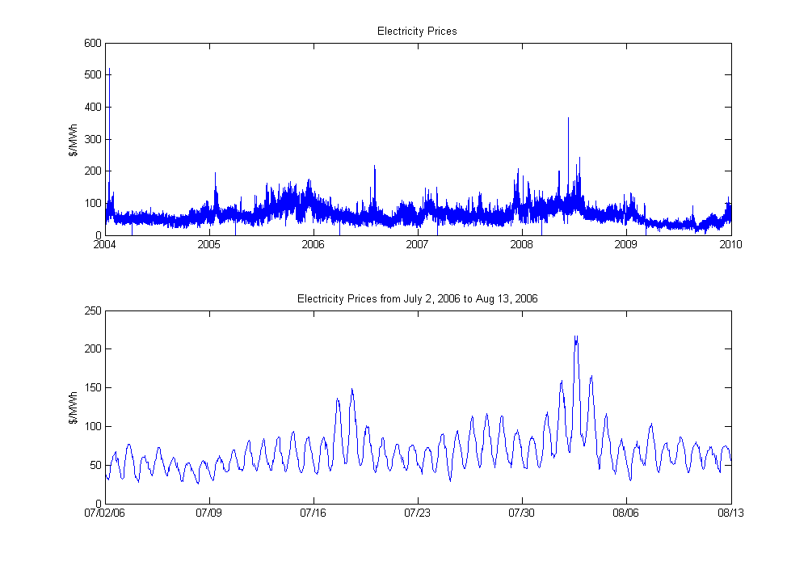
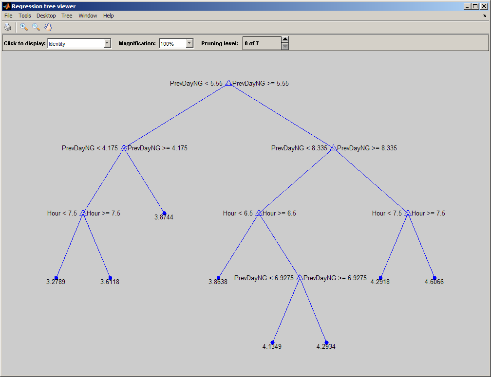
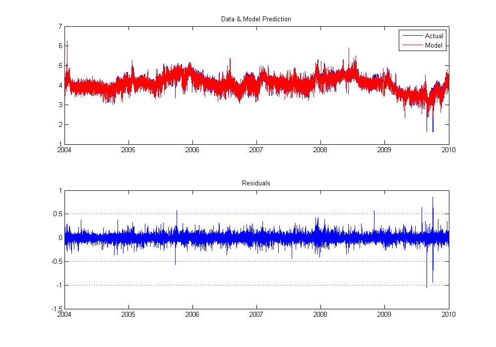
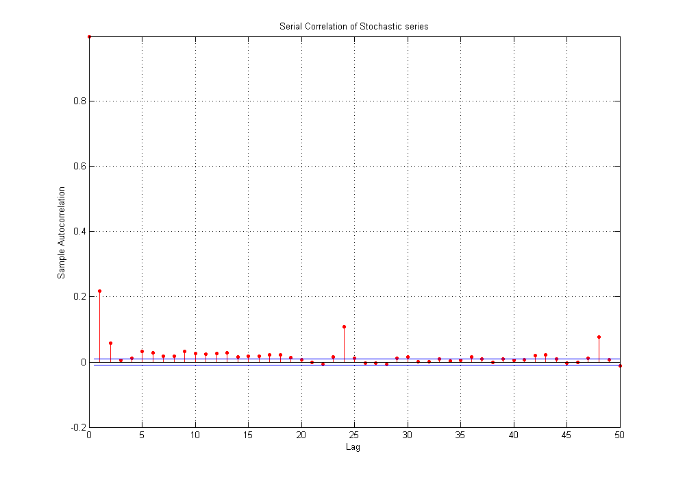
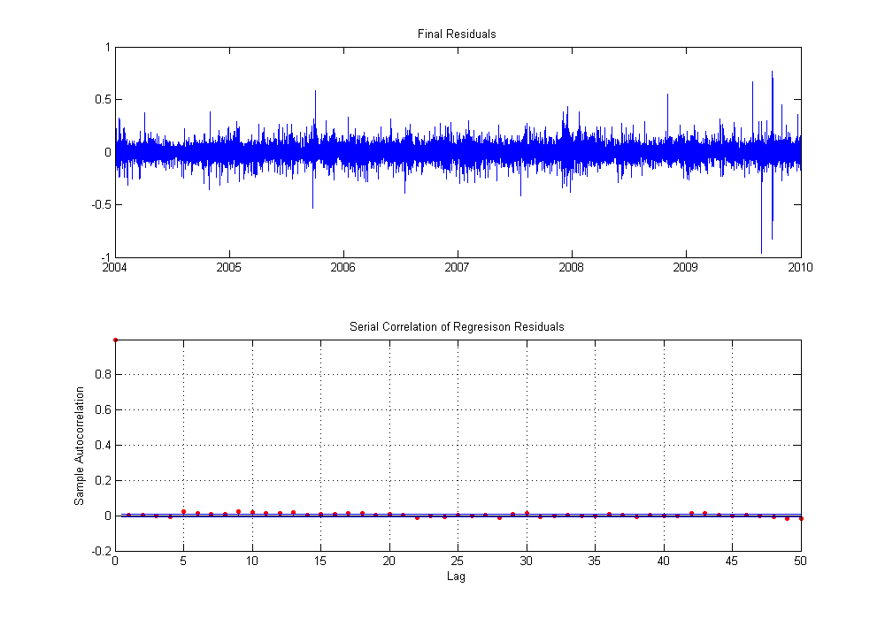
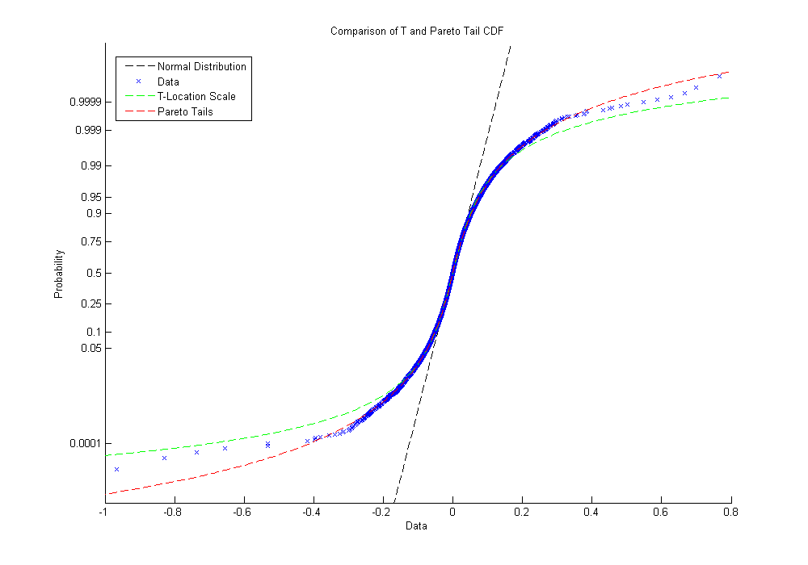
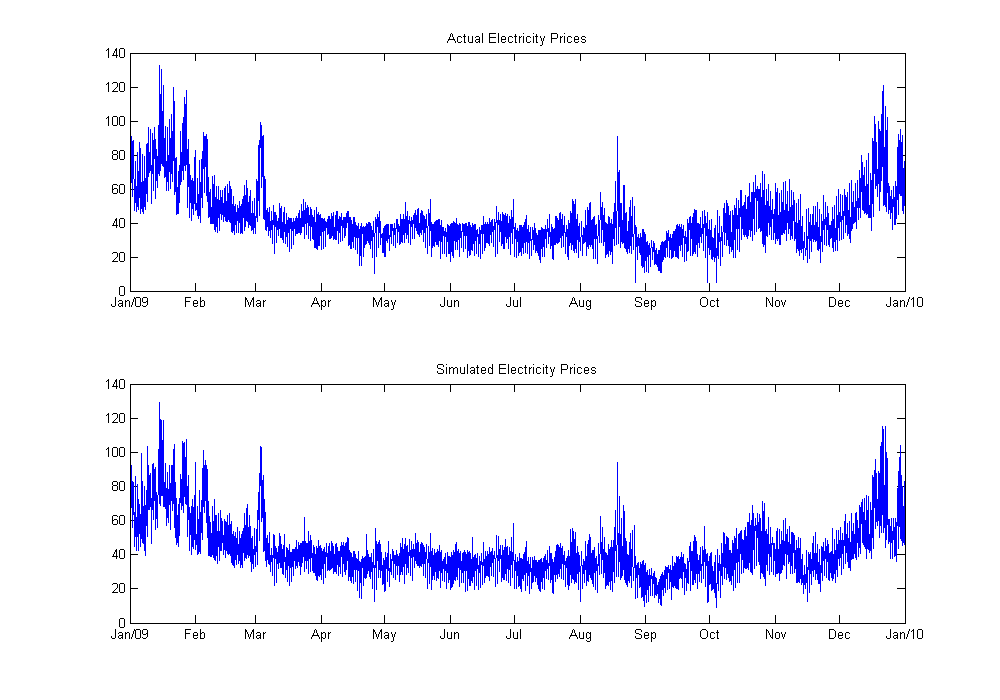

Modeling & Simulating Hourly Electricity
This example demonstrates fitting a non-linear regression tree model to hourly day-ahead electricity prices in the New England pool region. The log electricity prices are modeled with two additive components: a deterministic and stochastic component. The deterministic component takes into account observed electricity price changes due to changes in fuel (natural gas) prices, the daily temperature, the hour of the day, day of the week and holidays. This is modeled using a regression tree. The stochastic component is modeled as a seasonal AR process with heavy tailed innovations.
Note: Regression trees are known to be weak learners which can very easily overfit the data. While we do not address this issue in this demo, you may want to use out-of-sample cross-validation to prune the tree to balance accuracy of a training and test set. This can be done manually by using a separate subset of the data to build the model and a different subset to test its accuracy or by using a function such as CROSSVAL in Statistics Toolbox
Contents
- Import Data
- Plot Prices
- Remove outliers and convert to Log scale
- Create Predictor Matrix
- Build Regression Tree Model
- Compute & Visualize Model Performance
- Analyze Serial Correlation in Residuals
- Modeling the Stochastic Component with a seasonal AR model
- Analyze Residuals of Regression for Serial Correlation
- Fit a Distribution to Residuals
- Compare Pareto Tail Fit to Student's-t fit
- Summary of model
- Simulate model
Import Data
Data is loaded from a previously created MAT-file. The series consist of a vector of serial dates and the corresponding historical recorded temperature.
clear
load Data\ElecSeries
whos
Name Size Bytes Class Attributes Date 52608x1 420864 double ElecPrice 52608x1 420864 double Hour 52608x1 420864 double NGPrice 52608x1 420864 double Temperature 52608x1 420864 double
Also import a list of local holidays that span the dataset. These are read from an Excel spreadsheet. One can also use Financial Toolbox functions like HOLIDAYS, ISBUSDAY etc. to automatically generate holidays within the time range.
[numData, holidays] = xlsread('Data\Holidays.xls'); holidays = holidays(2:end,1); disp('Sample Holidays') disp(holidays(1:20))
Sample Holidays
'1/1/2004'
'1/19/2004'
'2/16/2004'
'5/31/2004'
'7/5/2004'
'9/6/2004'
'11/25/2004'
'11/26/2004'
'12/24/2004'
'12/31/2004'
'1/17/2005'
'2/21/2005'
'5/30/2005'
'7/4/2005'
'9/5/2005'
'11/24/2005'
'11/25/2005'
'12/26/2005'
'1/2/2006'
'1/16/2006'
Plot Prices
Create a visualization of the electricity prices from a macro and micro perspective
subplot(2,1,1); plot(Date, ElecPrice); dynamicDateTicks; ylabel('$/MWh'); title('Electricity Prices'); subplot(2,1,2); dateind = Date > datenum('July 2, 2006') & Date < datenum('Aug 13, 2006'); plot(Date(dateind), ElecPrice(dateind)); dynamicDateTicks; ylabel('$/MWh'); title('Electricity Prices from July 2, 2006 to Aug 13, 2006');
Remove outliers and convert to Log scale
There are 5 instances in the data where an electricity price of 0 is reported while the hours before and after are fairly high. These data points correspond to daylight savings time transitions. These data points will be removed and replaced with interpolated values from neighboring hours.
ind = ElecPrice==0; ElecPrice(ind) = interp1(find(~ind), ElecPrice(~ind), find(ind)); logPrice = log(ElecPrice);
Create Predictor Matrix
The deterministic component of the model will take into account the relationship between electricity prices and natural gas prices, temperatures, hour of the day, day of the week and holidays. Therefore we generate a matrix of these predictors for every observation. These predictors include,
- Temperature & Deviation from seasonal average (the stochastic component of temperature)
- Hour of day, Day of Week
- Logical indicator if it is a holiday
- NG spot price, previous day price and previous week price
[X, labels] = genPredictorsElec(Date, Hour, holidays, NGPrice, Temperature); disp(labels');
'Temp'
'TempDeviation'
'Hour'
'Weekday'
'IsWorkingDay'
'NGPrice'
'PrevDayNG'
'PrevWeekNG'
Build Regression Tree Model
Build a regression tree to model electricity prices given predictors. Visualize a highly-pruned small subset of the tree.
Note: Regression trees can easily overfit a training set. See the text at the start of this example for more information on how to avoid these pitfalls.
model = classregtree(X, logPrice, 'names', labels, 'Categorical', 5); subsettree = prune(model, 8660); view(subsettree)
Compute & Visualize Model Performance
Predict electricity prices using the model and compare them with the observed prices. The visualization function here is the same function used in the comparison of predicted and actual values for the Temperature model. The mean absolute error (MAE) is also displayed.
pred = model(X); res = logPrice - pred; fitPlot(Date, [logPrice pred], res); disp(['Mean Absolute Error (in original units, not log units): $' num2str(mean(abs(exp(res))))]); disp(['Mean Absolute Percent Error (in original units): ' num2str(mean(abs(exp(res)./ElecPrice*100))) '%']);
Mean Absolute Error (in original units, not log units): $1.0013 Mean Absolute Percent Error (in original units): 1.8097%
Analyze Serial Correlation in Residuals
The residuals, though fairly detrended may still have some serial correlation. This can be tested with autocorrelation plots
figure;
autocorr(res,50);
title('Serial Correlation of Stochastic series');
 Modeling the Stochastic Component with a seasonal AR model
One could choose to model the random component a mean reverting drift SDE. However, because of the seasonality, we will use an auto-regressive model with seasonal lags. As can be seen from the above plot, there is a strong seasonal correlation on an hourly and daily scale. Therefore we use lags at 1-4 hours and 1-2 days
lags = [1 2 3 4 23 24 25 48];
Xres = lagmatrix(res, lags);
[beta, betaci, res2] = regress(res, Xres);
disp('Lags Coefficients and Confidence Intervals');
disp([lags' beta betaci])
Lags Coefficients and Confidence Intervals
1 0.2166 0.20808 0.22513
2 0.014596 0.0059255 0.023267
3 -0.013615 -0.022286 -0.0049433
4 0.010699 0.0022214 0.019177
23 -0.0052525 -0.013733 0.0032281
24 0.10719 0.098466 0.11591
25 -0.03629 -0.04482 -0.027761
48 0.062103 0.053776 0.070429
Analyze Residuals of Regression for Serial Correlation
The residuals from the regression should now be mostly serially uncorrelated.
figure; subplot(2,1,1); plot(Date,res2); dynamicDateTicks; title('Final Residuals'); subplot(2,1,2); autocorr(res2(lags(end)+1:end),50); title('Serial Correlation of Regresison Residuals');
Fit a Distribution to Residuals
Since the residuals are mostly uncorrelated, they can be modeled as independent draws from an appropriate distribution. However the residuals may have fatter tails (spiky behavior) than a students-t distribution can model. Therefore, a piecewise distribution such as a pareto tail distribution may be more appropriate. The paretotails distribution uses a non-parametric distribution for the middle 80% of the data and pareto distribution for the bottom and upper 5% tails of the data.
PD = paretotails(res2, .05, .95)
PD =
Piecewise distribution with 3 segments
-Inf < x < -0.0738046 (0 < p < 0.05): lower tail, GPD(0.142446,0.0341202)
-0.0738046 < x < 0.0755481 (0.05 < p < 0.95): interpolated empirical cdf
0.0755481 < x < Inf (0.95 < p < 1): upper tail, GPD(0.170516,0.0338455)
Compare Pareto Tail Fit to Student's-t fit
Notice how the pareto tail model is better able to match the empirical CDF of the residuals.
PDt = fitdist(res2, 'tlocationscale'); figure; probplot(res2); h = probplot(gca, PDt); set(h,'Color', 'g'); h = probplot(gca, @PD.cdf); set(h,'Color', 'r'); legend('Normal Distribution', 'Data', 'T-Location Scale', 'Pareto Tails', 'location', 'best'); title ('Comparison of T and Pareto Tail CDF')
Summary of model
The electricity model can now be defined by,
- The regression tree "model"
- Regression parameters "beta"
- Autocorrelation lags "lags"
- The residual probability distribution "PD"
- Optional presample data (the last observations of temperature for regression)
elecModel = struct('treemodel', model, 'reglags', lags, 'regbeta', beta, 'dist', PD, 'presample', res(end-lags(end)+1:end)) save SavedModels\ElectricityModel -struct elecModel clearvars -except elecModel Date X holidays ElecPrice
elecModel =
treemodel: [1x1 classregtree]
reglags: [1 2 3 4 23 24 25 48]
regbeta: [8x1 double]
dist: [1x1 paretotails]
presample: [48x1 double]
Simulate model
We can now simulate this model for 2009 and compare the simulated values to the observed data for 2009. Note that this is only simulating the electricity prices. The temperature and natural gas are constant. Therefore the large scale shape of the prices which is mostly determined by the deterministic component stays constant with smaller local variations with each trial.
indx = length(Date)-365*24+1:length(Date); newDates = Date(indx); simElec = simulateElecPrices(elecModel, newDates, 1, X(indx,1), X(indx,2), X(indx,6), holidays); % Plot simulation results ax1 = subplot(2,1,1); plot(newDates, ElecPrice(end-365*24+1:end)) title('Actual Electricity Prices'); ax2 = subplot(2,1,2); plot(newDates, simElec); title('Simulated Electricity Prices'); linkaxes([ax1 ax2], 'x'); dynamicDateTicks([ax1 ax2], 'linked');